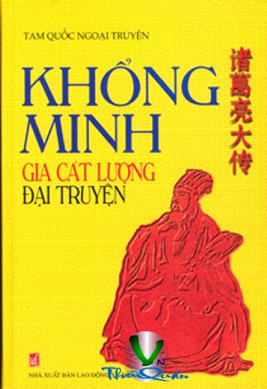

« Back
Khổng Minh Gia Cát Lượng Đại Truyện
By Trần Văn Đức

LỜI NÓI ĐẦU
Lời Dẫn Truyện
QUYẾN THƯỢNGNGỌA LONG XUẤT SƠNLỜI GIÁO ĐẦU
THIÊN THỨ NHẤTKHỔNG MINH XUẤT Sơnchương I
Chương II
Chương III
Chương IV
THIÊN THỨ HAITHÂN NGÔ CHỐNG Tàochương V
Chương VI
Chương VII
Chương VIII
Phụ Chương
QUYỂN TRUNGHỔ GẦM GIÓ THỐCTHIÊN THỨ BAXỨ SỞ THẦN Tiênchương IX
Chương X
Chương XI
Chương XII
Phụ Chương
THIÊN THỨ TƯGỬI CON Ở THÀNH BẠCH Đếchương XIII
Chương XIV
Chương XV
Phụ Chương
THIÊN THỨ NĂMNHÀ CHÍNH TRỊ TÀI Năngchương XVI
Chương XVII
Chương XVIII
Phụ Chương
QUYỂN HẠGIÓ THU THỔI QUA GÒ NGŨ TRƯỢNGTHIÊN THỨ SÁUTHÁNG NĂM VƯỢT LÔ Giangchương XIX
Chương XX
Chương XXI
Chương XXII
Phụ Chương
THIÊN THỨ BẢYBẮC PHẠT TRUNG Nguyênchương XXIII
Chương XXVI
Chương XXV
Chương XXVI
Phụ Chương
THIÊN THỨ TÁMDẤN THÂN TẬN Tụychương XXVII
Chương XXVIII
Chương XXIX
Chương XXX
Chương XXXI
Phụ Chương
Thiên Phụ Họagia CÁT KỲ TÀI
GIA CÁT LƯỢNG LIÊN PHẢ
Phả Hệ
Đồ Biểu Minh Hoạ
Phát Minh